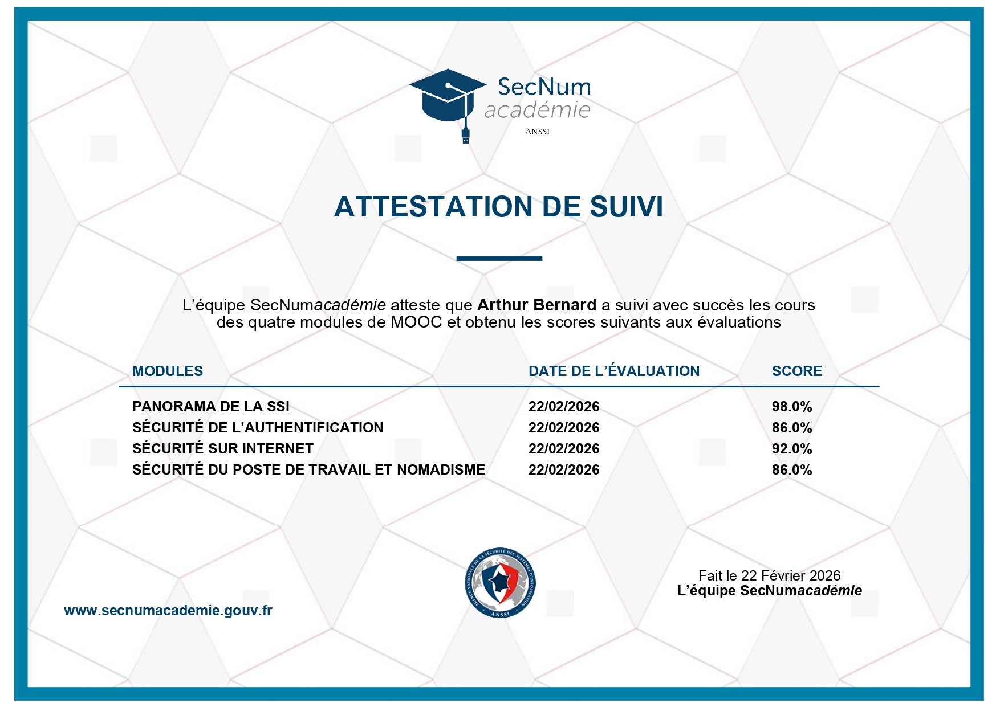

Parcours de Certifications Professionnelles
Dans un secteur en constante évolution, je m'engage dans une démarche de certification continue pour valider mes compétences techniques auprès des leaders du marché (Microsoft, Cisco, Fortinet).
Microsoft Azure
Microsoft Certified: Azure Fundamentals (AZ-900)
Statut : Validé / Prévu Mars 2026
Validation des concepts fondamentaux du Cloud : modèles de service (IaaS, PaaS, SaaS), sécurité, conformité et gestion des coûts sur la plateforme Azure.
Microsoft Certified: Azure Administrator Associate (AZ-104)
Statut : En cours de préparation (Objectif fin 2026)
Apprentissage de l'implémentation, de la gestion et de la surveillance de l'identité, de la gouvernance, du stockage, du calcul et des réseaux virtuels dans un environnement Cloud.
Cisco Networking Academy
Cisco Certified Network Associate (CCNA 200-301)
Statut : Formation en cours (BTS CIEL, prévu été 2026)
Maîtrise des fondamentaux du réseau, de l'accès réseau, de la connectivité IP, des services IP et de la sécurité des bases.
Cybersécurité
ANSSI - SecNumAcadémie
Statut : Obtenu
Validation du MOOC de l'ANSSI portant sur la sécurité des systèmes d'information : hygiène informatique, sécurité du nomadisme et protection des données.
Fortinet Training Institute (NSE 1 & 2)
Statut : Obtenu
Sensibilisation aux menaces cyber et découverte du "Security Fabric" de Fortinet pour la protection des infrastructures réseaux.
